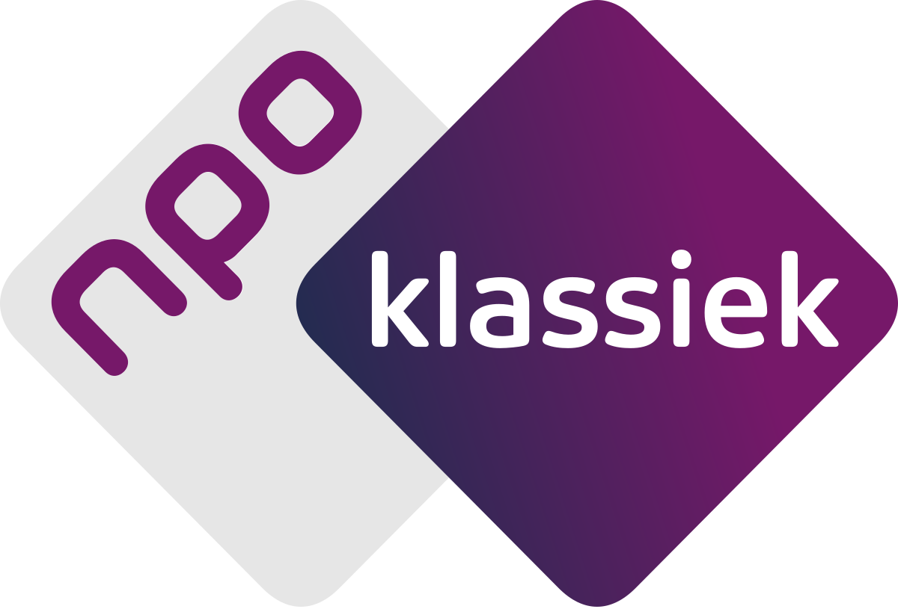

Professional Experience
-

Producer, NPO Klassiek
July 2021 – Now
- Compose playlists consisting of classical music to broadcast
- Write texts for radio show 'Echo'
- Direct radio show 'Maatwerk
Producer, NPO 3FM
November 2021 - December 2024
- Written, produced and directed radio shows for many different DJ's and shows, including VoorAan
- Produced and directed many live performances on air, including a performance by Prins S en de Geit
- Head producer for night shift in yearly fundraiser Serious Request
Producer, Qmusic
January 2024 - September 2024
- Written, produced and directed radio shows for many different DJ', including Menno Barreveld, Tom & Bram and Mattie & Marieke
- Jury member on 'Het Geluid'
- Correspond with listeners and prepare interviews
-
DJ and Editor, Efteling Kids Radio
September 2019 - April 2021
- Hosted 'De Vrijdagmiddagdisco'
- Edited audio logo's, sweepers and bumpers for on-air usage
- Produced many radio events, such as in-park location broadcasts from Beeld & Geluid Hilversum
Education
-
BA in Creative Business, Breda University of Applied Sciences
2017 – Now
- Gave a lecture on Radio Production
- Followed the TDI course
-
HAVO Diploma, Mendelcollege Haarlem
2016
- Economics & Society and Culture & Society
- Thesis on the influence of Greek mythology on the film industry
- Member of the debate club